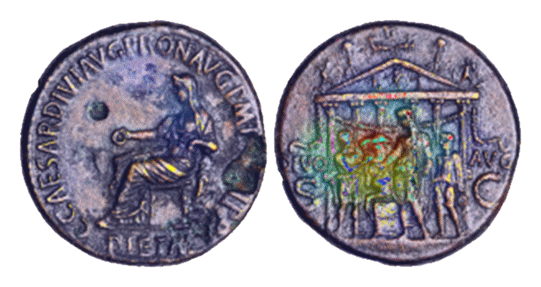

Numismatik und Digital Humanities
welche Relevanz haben gute Forschungsdaten für die Numismatik?
Beschreibung
Mattia Celisi ![]()
Susanne Boerner
Motivation
Nutzung von digitalen Münzfotografien, sei es durch die Nutzung der digitalisierten Typenkataloge wie OCRE. Die Numismatik ist in der Digitalisierung ihrer Bestände bereits weit fortgeschritten. Trotzdem verwenden viele Museen, Denkmalämter und universitäte Einrichtungen verschiedene Software-Systeme zur Aufarbeitung ihrer Bestände. Diese Bestände sind nicht ohne weiteres miteinander verknüpfbar.
Dieses Modul hat zum Ziel, die bestehenden Systeme vorzustellen, so weit wie möglich interoperabel zu machen. Mit den daraus resultierenden Forschungsdaten umzugehen, erfordert technische Fähigkeiten und eine Kenntnis der Möglichkeiten und Grenzen der Daten. Dann ist es ein leichtes, Münzdaten für die eigene Forschung zu verwenden und neue Fragestellungen zu erschließen.
Dadurch ergeben sich neue Möglichkeiten, Münzen zu visualisieren, sei es in Hausarbeiten oder Präsentationen. In den letzten Jahren sind dadurch eine Reihe von Projekten entstanden, unter anderem mit der Nutzung von moderner KI.

Lernziele
In dieser OER lernen Sie:
- die wichtigsten numismatischen Datenbanken kennen, und wie Daten heruntergeladen werden können (link zu data access.qmd)
- Die Daten zu verstehen und zu bereinigen (link zu data aggregation)
Voraussetzungen
Für das erfolgreiche Absolvieren dieser Übung wird vorausgesetzt:
es müssen keien Programme vorinstalliert werden, alles läuft interaktiv in Quarto ab
Grundlagenwissen in Python
Vorbereitung: Was sind Forschungsdaten
Forschungsdaten sind zunächst jede Art von digitalen Daten, die wissenschaftlich ausgewertet werden. Sie bilden die Grundlage wissenschaftlicher Arbeit und dokumentieren deren Ergebnisse.
Um den Umgang mit Forschungsdaten zu vereinfachen und zu vereinheitlichen, haben sich die jeweiligen Disziplinen eigene Standards gegeben. Im Bereich der Numismatik und Archäologie allgemein, ist für Deutschland die Nationale Forschungsdateninfrastruktur für die materiellen Hinterlassenschaften der Menschheitsgeschichte relevant (NFDI4Objects).
Hier können Sie genaueres zu Aufgaben und Aufbau der NFDI erfahren. Mehr erfahren
Die Aufarbeitung der Daten soll dabei anhand der FAIR-Kriterien erfolgen. Das Akronym steht für die Kategorien Findable, Accessible, Interoperable, Reusable, also auffindbar, zugänglich, interoperabel und wiederverwendbar. FAIR-Kriterien werden in etwa seit zehn Jahren in der Wissenschaft genutzt. Initiativen wie GO-Fair haben die Prinzipien ausformuliert.
Findable
Die Kategorie Findable bezieht sich zunächst darauf, dass die Daten im Web eindeutig identifizierbar sein müssen. Ihre URL muss persistent, also unveränderlich sein, sodass in der Zukunft keine andere Ressource die gleiche URL bekommt. Es gibt mehrere Services, die diese Anforderungen erfüllen, zum Beispiel die DOI (Digital Object Identifier)-Organisation.
In der Numismatik haben moderne Münzdatenbanken einen eindeutigen und persistenten Permalink, so auch die Münzen der Heidelberger Sammlung (Beispiel). Die Daten sollen allerdings auch auffindbar sein, wenn der Identifier unbekannt ist. Dafür müssen die Daten mit gut beschriebenen Metadaten ausgezeichnet sein. Dazu gehören bei Münzdaten Informationen zur Prägestätte, Nominal oder Gewicht. Auch diese Informationen, sowie Publikationen, die auf Münzen verweisen, sollten mit einem Identifikator versehen sein.
Accessible
Neben der Auffindbarkeit ist entscheidend, dass Münzobjekte und die dazugehörigen Beschreibungen zugänglich sind. Ein Digitalisat einer Münze in einer Online-Datenbank muss über standardisierte Protokolle (z. B. HTTPS) erreichbar sein.
Ist ein direkter Zugriff auf hochauflösende Bilder aus urheberrechtlichen Gründen eingeschränkt, können zumindest die Metadaten frei zugänglich bleiben. So kann ein Forscher nachvollziehen, dass eine bestimmte Münze dokumentiert ist, selbst wenn er nicht sofort das Bildmaterial herunterladen darf.
Interoperable
Forschungsdaten in der Numismatik sollen sich mit anderen Sammlungen und Fachdaten verknüpfen lassen. Dafür ist es wichtig, gemeinsame Standards und Vokabulare zu nutzen.
Ein Beispiel wäre die Verwendung von Normdaten wie GND-IDs für antike Herrscher oder Nomisma.org-Referenzen für Münztypen. Wenn eine römische Münze aus Trier mit „RIC“-Referenzen (Roman Imperial Coinage) ausgezeichnet und gleichzeitig mit Ontologien wie Nomisma.org verknüpft wird, lassen sich Informationen aus verschiedenen Museen und Publikationen problemlos kombinieren.
Reusable
Die Wiederverwendbarkeit bezieht sich auf die Fähigkeit des Nutzenden, die Daten korrekt zu interpretieren. Dazu sollten so viele Kontextinformationen wie möglich gegeben werden, auch diejenigen, die auf den ersten Blick irrelevant erscheinen.
Dazu gehören: - Versionsnamen der Daten
- Konkrete Informationen zur im Erhebungsprozess verwendeten Soft- und Hardware
- Schritte im Datenerhebungsprozess (Formulierung des Ziels, Kennzeichnung von fremden Daten, Beschreibung der Datenverarbeitungsschritte)
Um die Wiederverwendbarkeit zu erleichtern, sollten diese Metadaten nach einem standardisierten Muster angegeben werden.
- Bei Publikationen: Dublin Core
- Für archäologische Daten: Europeana-Datenmodell
Als Teil der Wiederverwendbarkeit sollten auch klare Lizenzen vergeben werden, damit automatisierte Suchen nicht versehentlich urheberrechtlich geschütztes Material abgreifen.
Transferaufgaben
Weiterführende Quellen und Informationen
Der Ort für weiterführende Quellen und Informationen. Wenn Sie Fußnoten im Text eingefügt haben, werden die liographischen Angaben automatisch generiert und in das Dokument eingefügt.
Nachnutzen
Alle sind herzlich eingeladen, diesen Baustein und die zugehörige Copyleft-Lizenz zu nutzen, um ihr Wissen und Expertise in die Verbesserung und Aktualisierung einzubringen. Alle können die Inhalte erweitern oder überarbeiten, zum Beispiel um Anwendungsszenarien und Nutzungskontexte zu erweitern.
Unser Wunsch ist ein lebendiges, stetig wachsendes Dokument, das sich durch die Beiträge vieler verändert - im Einklang mit eines sich wandelnden Umfelds. Wir freuen uns im Falle einer Überarbeitung über eine kurze Notiz – das ist aber selbstverständlich keine Pflicht.
Lizenz
Urheber:innen
Zitiervorschläge
@misc{celisi2025,
author = {Celisi, Mattia and Boerner, Susanne},
publisher = {NFDI4Objects},
title = {Numismatik und Digital Humanities},
date = {2025-10-16},
langid = {de},
abstract = {Zusammenfassung}
}